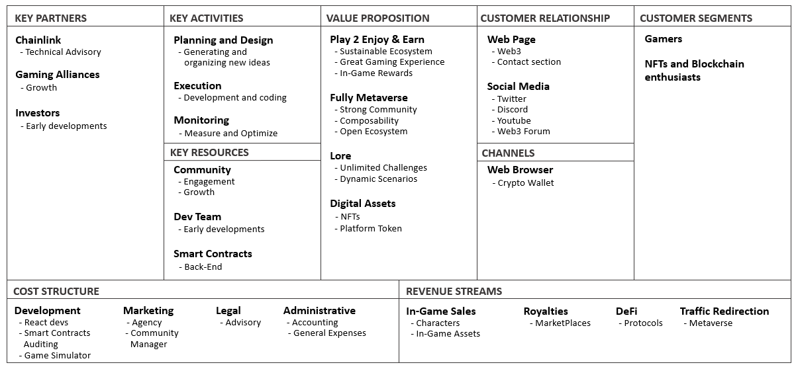

Author: Jaime Fidalgo Santos
Date: April 17, 2022
Blockchain technology has brought new and fascinating ecosystems to the table. This means that both people
and organizations interact differently than they were used to. In this context, trying to understand the
basics of a project is paramount. In this post I am going to walk you through the Chains of Glory business
model. In order to do so, I will be using the well-known canvas business model tool. So if you're curious
about how this project is conceived, this post is for you!

The Chains of Glory project has a clear VALUE PROPOSITION:
- It moves from Play 2 Earn model to Play 2 Enjoy & Earn. By design, users are provided with both
in-game rewards and a great user experience, all within a sustainable economic environment that is not
based on pyramidal schemes where the system’s health relies on new users coming in.
- It is Fully Metaverse-based. The Metaverse represents an interconnected ecosystem in which the
experiences of one game can be transferred to any other, in which players can freely interact with each
other with no need of central entities. That, with no doubt, represents the future of the entertainment
industry.
- Great Lore. Chains of Glory takes place in a fantastic world carefully designed to offer endless
possibilities and outcomes that will be community guided.
- It provides users with the opportunity to build up and own Digital Assets with real value that
can be monetized in the form of NFTs and also trough the native Token.
The targeted
CUSTOMER SEGMENT:
- Any kind of gamer will be able to enjoy playing the game. However, those with personal interest
in both the NFTs and Blockchain space will get the most out of it. The game is carefully
designed to avoid professional players that bleed out all the game rewards.
Four different
REVENUE STREAMS will help growing the project:
- In-Game Sales are the clearest revenue stream. By the acquisition of any character, users will
gain access to the platform and the project will be funded. Since character’s game status is stored on
the Blockchain, users can monetize from them by selling the NFTs to other users within a Market Place.
- Royalties. When any asset is sold in an external MarketPlace, a small fee is taken by the
platform. Thus, creating a recurrent source of income.
- DeFi. From every money inflow that the platform generates, a percentage will be allocated and
reinvested into DeFi protocols.
- Traffic Redirection. Once the project gets some base of users. They can be monetized thorugh the
Metaverse. By getting agreements with other players of the ecosystem. Marketing Actions via NFTs can be
carried out.
The
CHANNELS used to interact with the product:
- The game will be fully accesible using a web browser and a crypto wallet through any device with
internet connection. The platform, via Web3, will recognize whether the wallet address owns the NFTs of
the game. Thus, unlocking the according functionalities.
CUSTOMER RELATIONSHIPS will be initially managed by using several tools:
- Web Page. It will be the starting point. The place where anyone can access the game and find
relavant information regarding Updates, FAQs, Developer Posts, Roadmap, Contact and Dev Team
Information, etc.
- Social Media. There will be several social networks that will foster community. Twitter, Discord
and Youtube are very well-known and suitable platforms to engage with the community. In addition, a
Web3-based forum will be developed where users will have access to different threads according to their
game level. Thus, avoiding spoilers from the most advanced users when it comes to the Lore.
The
KEY ACTIVITIES that the Dev Team is keen on go as follows:
- Planning. Chains of Glory is a dynamic ecosystems and the Dev Team will be focused on bringing
in new functionalities over time. Specially when it comes to engage with the community.
- Executing. Just planning is not enough. The Dev Team will allocate the necessary resources to
bring proposed and accepted plans to life.
- Monitoring. Just as every start-up does, the Dev Team has a Lean mentality, meaning that every
execution will be tested, measured and optimized according to the results. Thus, improving over time.
The
KEY RESOURCES of the project:
- The most important resource of the project is its Community. Nothing makes sense without it.
- The Dev Team. As building a fully decentralized platform takes time, the Dev Team will act as
catalyst for this matter.
The
KEY PARTNERSHIPS:
- Chainlink. A well-known and consolidated company in the Blockchain Industry is kindly providing
technical support to the project.
- Gaming Alliances. It is one of the foremost important objectives for the project after going
live. Gaming alliances unleash all the Metaverse potential by allowing projects and communities to
network.
- Investors. Early investors, specially during the private token sale round, will be paramount to
get the project to its most at early stages.
The
COST STRUCTURE:
- Development. Development works never stop. A rather decent amount of funding will be allocated
to build a pleasant User Experience through the App Front-End. In addition, security is key in the
Blockchain sector. For that reason, Smart Contracts auditing processes are a must. Last but not least. A
game simulator will be built to help balancing the game stats so they remain fair for every-level
participant.
- Marketing. For the project to be known and the community to be properly taken care of. Part of
the funds will be allocated to Markekting. Having a Marketing Agency and a Community Manager will add
value to the ecosystem by helping the Dev Team to develop a strong brand.
- Legal Advisory. Part of the budget will be used to properly set up the most regulation-compliant
legal entity to back up the project.
- Administration. This is expected to be the less relevant chapter of the budget. However,
accounting tasks and other administrative spendings have been taken into account.
So, wrapping up, I strongly believe that Chains of Glory is a solid project full of potential. It is also the
perfect time for it to thrive. I hope you, dear reader, have found this information valuable for a better
understanding of its main features and I look forward to seeing you in the game!